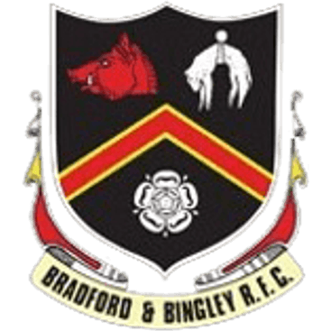

Bradford & Bingley RFC
Bingley, West Yorkshire
West Yorkshire club with strong amateur rugby traditions and a welcoming club culture.
View Profile
West Yorkshire is one of the strongest rugby league areas in the world, with rugby union clubs in many of the same towns. This page lists the 52 West Yorkshire clubs in our directory — 36 rugby league and 16 rugby union.
Professional rugby league is represented by Leeds Rhinos, Wakefield Trinity, Castleford Tigers, Bradford Bulls, Huddersfield Giants, Featherstone Rovers, Halifax Panthers and others, with a large amateur network beneath them. Rugby union clubs include Headingley, Otley, Wharfedale, Ilkley, Morley, Bradford & Bingley.
For the city on its own see our Leeds rugby clubs page; for the wider region, the Yorkshire rugby union listings.
Our directory currently lists 52 clubs in West Yorkshire — 16 rugby union and 36 rugby league. If a club is missing, you can register it for free.
Rugby league is the traditional game in towns such as Wakefield, Castleford, Dewsbury, Batley and Featherstone, while rugby union is strong in Leeds, Otley, Ilkley and the Aire and Wharfe valleys. Many towns have clubs of both codes.
Pick two or three clubs near you, check each club's profile for where it plays and how to get in touch, then ask about the next training session. Our guide to finding a rugby club walks you through it.
We add new clubs regularly. If your club is not listed yet, register it for free so players searching near you can find it.
Register Your Club Free